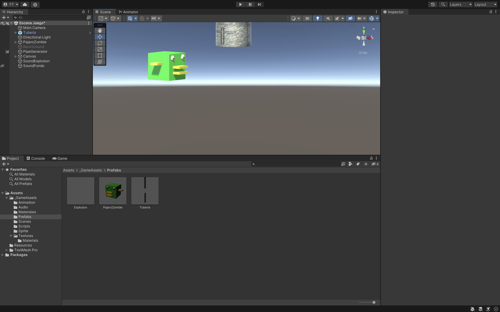
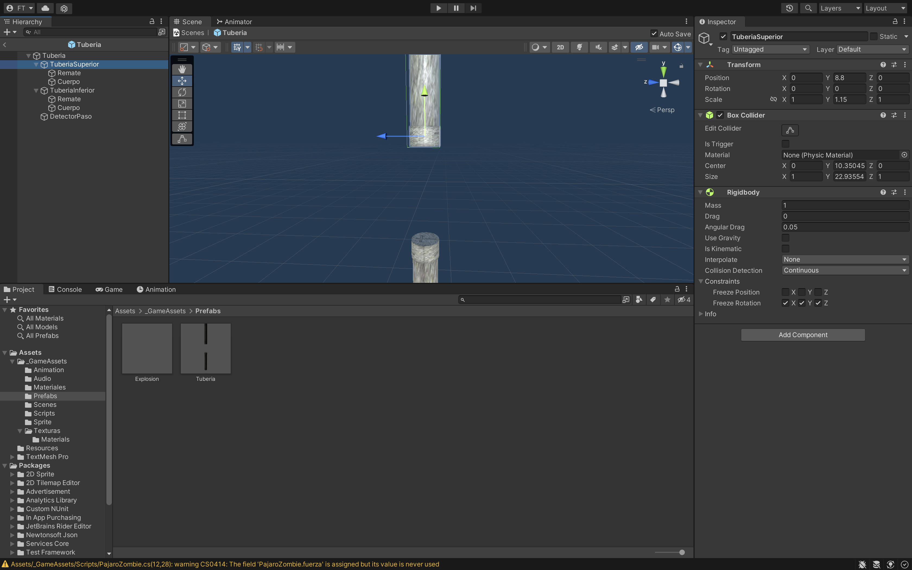
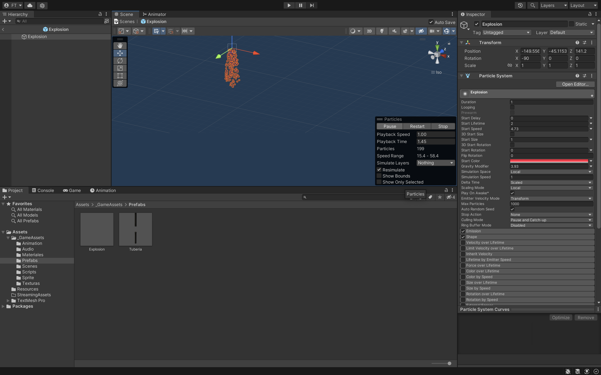
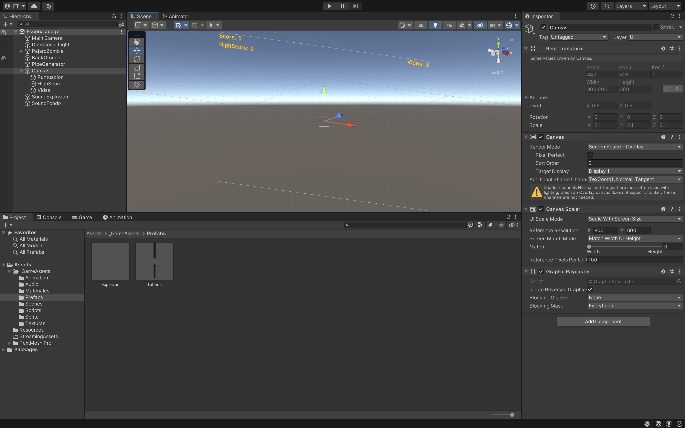
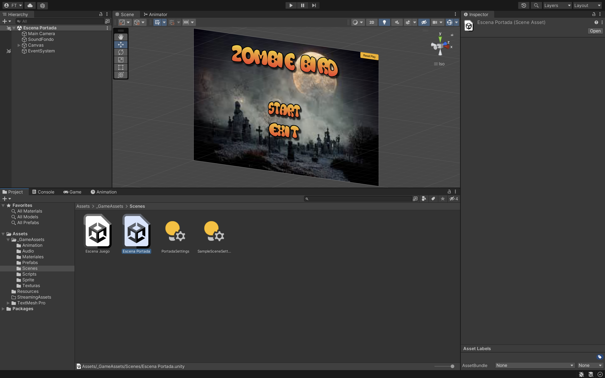

Haremos una versión del FlappyBird. Para ello necesitaremos una estructura de carpetas que tendrán el
contenido necesario para hacer el juego que lo iremos incluyendo poco a poco:
_GameAssets
• Animation
• Audio
o Hit.wav
o Point.wav
o Musica de fondo.mp3
• Scenes
o Escena Portada
o Escena Jugar
• Materiales para el ZombieBird y Tuberías
• Prefabs
o Explosión son las partículas de sangre del ZoombieBird cuando choca con las tuberías
o Tuberias
- Tuberia Superior GO vacío
• Cuerpo
• Remate
- Tuberia Inferior GO vacío
• Cuerpo
• Remate
- Detector será un GO vacío con un BoxCollider y IsTrigger chequeado
• Scripts
o PajaroZombie
o PipeGenerator
o Tuberías
o GameConfig tiene 3 métodos estáticos para llamarlos desde cualquier sitio para saber si puedo seguir jugando:
- IsPlaying
- ArrancaJuego
- ParaJuego
o GameController tiene métodos estáticos y guardaremos en PlayerPrefs las vidas, score y highscore.
- SetVidas y GetVidas
- SetPuntos y GetPuntos
- SetHighScore y GetHighScore
o PortadaScript. Tendremos varios métodos. Y estará en el Canvas de la portada.
- StartGame
- ExitGame
• Sprites para tener los botones y el título de la Escena Portada.
o https://es.cooltext.com/
• Texturas para tener los BackGround, texturas de las tuberías…...
En los Scripts y en todos los juegos habrá que crear métodos para tenerlo todo más organizado como pej: Actualizar Marcador, Actualizar Vidas, Finalizar Partida….. Lo que vayamos necesitando.
Tendremos que crear dentro de esta escena:
• PajaroZombie
• Tuberias (Prefab)
• Background
• PipeGenerator
• Canvas
o Puntuacion
o HighScore
o Vidas
• SoundExplosion
• SoundFondo

El pájaro lo creamos mediante Cubos, esferas……lo que necesitemos teniendo en cuenta la colocación de los objetos (padres e hijos). Estará mirando hacia la derecha.
En el Script todos los valores que se usen tendrán que estar dentro de variables. Algunos serán públicos para poder modificarlos desde Unity y otros private. Pej public int velocidad = 100; Para hacer pruebas y podamos modificarlo en tiempo de ejecución
Lo podemos mover de varias maneras. Probar todas las opciones y dejaremos la que más nos guste.
• Con el Espacio:
o Input.GetKeyDown(“space”)
o Le damos fuerza al RigidBody con AddForce hacia arriba.
• Con ASDW por posición: Input.GetKey(KeyCode.W).
o Transform.position += ó -= new Vector3(x, y, 0) donde la x ó y será velocidad * Time.Deltatime
• Con Translate
o Multiplicando el Vector.right (o el que corresponda) * velocidad * Time.Deltatime
El pájaro no podrá sobrepasar los límites de la pantalla.
Time.Deltatime para hacer que tu juego funcione independientemente de la velocidad de fotogramas.
El pájaro tendrá una animación para que se muevan las alas.
• Componente Animator
o Crear Controlador Pajaro y Animation Alas .

Crear la tubería como hemos indicado anteriormente. Tanto la Tubería Inferior y Superior (los GO vacíos)
tendrán que tener un Material en los hijos de Cuerpo y Remate. Y 2 componentes BoxCollider y RigidBody.
Hacer el Prefab de la Tuberia.
GO Abreviatura de GameObject.
GO vacío desde donde empiezan a generarse las tuberías. Y tendrá asociado un Script PipeGenerator.cs.
• InvokeRepating que llamara a un método de GenerarPipe cada cierto tiempo.
• Metodo GenerarPipe utilizaremos otro método Instantiate para crear la tuberia.
Tendrá un script de Tuberia.cs:
• La tubería se generará en una posición aleatoria mediante Random.Range con un limiteSuperior y un
limiteInferior.
• Haremos que cada tubería empiece en una dirección aleatoria entre 1 y 2. Para que empiece arriba o
abajo. Y para ello crearemos un método TuberiaSubiryBajar().
• El movimiento lo haremos con el Translate hacia la izquierda. Usando el Time.deltaTime y una velocidad.
• Cuando la tubería sobrepase una posición X la destruimos.
Crear un Prefab de la Tuberia.
Faltaría la animación de las Tuberías que la haríamos moviendo la posición Y tanto de la TuberiaSuperior y TuberiaInferior. Como si nos quisieran aplastar al pájaro entre ellas. La llamaríamos Tuberia.
El pájaro tendrá 3 métodos:
• Método OnCollisionEnter: Cuando colisionamos con la tubería tendremos que quitar vida, actualizar
el canvas (Método Actualizar Vidas) y aparecerán unas partículas de color rojo que será un Prefab
de Explosión. Tendrá un sonido de Hit.
• Método OnTriggerEnter: Y si colisionamos con el Detector sumaremos puntos y también aparecerán
el canvas (Método Actualizar Marcador). Tendrá un sonido de Point.
• Componente AudioSource
o Point para puntos
GO vacío con un componente Particle System para que aparezcan las particulas cuando se chocan con la tuberia.
Será un Prefab

GO vacío con un componente AudioSource hit para cuando choque con la tubería.
Será el fondo del juego un Quad. Buscar una textura que sea .JPG y añadírselo a un material.
UI/Text-TextMeshPro
• Contendrá la puntuación cada vez que pasemos una tubería.
• HighScore.
• Vidas del Pajaro.

Guardaremos la puntuación, HighScore y Vidas en PlayerPrefs. Los PlayerPrefs los guardamos en un Script
GameControler.cs con métodos Static para poder llamarlo desde el Script:
• GetPuntos(), SetPuntos(), GetHightScore(), SetHightScore(), GetVidas(), SetVidas().
PlayerPrefs en Unity es una clase integrada diseñada para guardar y cargar configuraciones o datos simples del jugador (como volumen, puntuaciones altas o nivel actual.....).
Será un Script que tendrá 3 métodos estáticos:
• IsPlaying retorna el bool de jugando para saber si sigo con el juego o no.
• ArrancaJuego pone la variable de jugando a true.
• ParaJuego pone la variable de jugando a false.
Tendremos que crear dentro de esta escena:
• AudioSource es una música de Fondo.
• Canvas.
o PortadaScript.cs tendrá 2 métodos para los botones:
- StartGame.
- ExitGame.
- DeteleGame Borra los PlayerPrefs. NO obligatorio
o Image será el BackGround.
o Image Titulo del Juego.
o Button para Resetear los PlayerPrefs Por si lo necesito NO obligatorio.
o Panel.
- Start.
- Exit.
